- Gire la llave de contacto a la posición LOCK.
Advertencia: Consulte Advertencia sobre la desconexión de la batería en la sección Prólogo
- Abra el capó.
- Despresurice el sistema de combustible. Consultar Descarga de la presión del combustible .
- Desconecte el cable negativo de la batería. Consultar Desconexión y conexión del cable de batería negativo .
- Recupere el refrigerante del aire acondicionado (A/A). Consultar Recuperación y recarga del agente frigorífico .
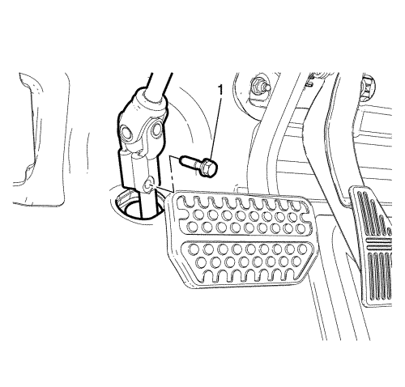
- Desmonte el tornillo inferior del eje intermedio de la dirección (1).
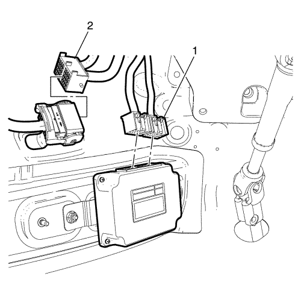
- Desenchufe los conectores TCM (1) y el mazo de cables del motor (2).

- Desenchufe el conector del sensor de temperatura del aire de admisión (1).

- Desmonte las abrazaderas (1, 2).
- Gire y tire de los tubos flexibles para desmontar el conjunto del cuerpo del acelerador.
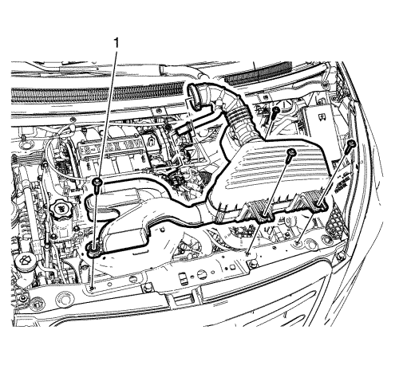
- Extraiga los 4 pernos (1) del conjunto del filtro de aire.
- Extraiga el conjunto del filtro de aire.
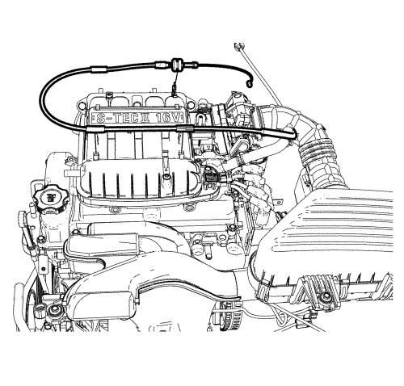
- Desconecte el cable del acelerador, si procede.
- Desmonte la batería Consultar Sustitución de la batería .

- Extraiga los pernos de retención (2) del soporte del módulo de control del motor (ECM) a la bandeja de la batería.

- Tire de la palanca del conector eléctrico (1) del módulo de control del motor (ECM). Y desenchufe los conectores eléctricos (2) del módulo de control del motor (ECM).

- Desmonte los retenedores (1) de la bandeja de la batería con una herramienta adecuada.

- Extraiga los pernos (1) y la tuerca (3).
- Desmonte la bandeja de la batería (2).

- Desmonte la cubierta del centro eléctrico de la carrocería (BEC) bajo el capó.
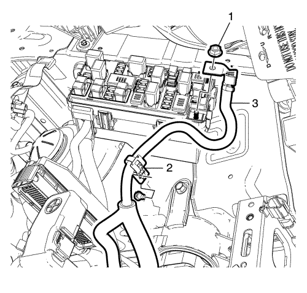
- Extraiga la tuerca de retención (1) del cable positivo al centro eléctrico de la carrocería (BEC).
- Tire del cable positivo (3) para separar el retenedor del cable positivo (2) de la carrocería.
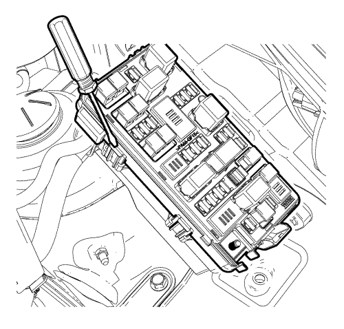
- Levante la placa superior con la herramienta adecuada.

- Extraiga los pernos de retención (2) de la placa superior BEC bajo el capó a la placa inferior.
- Desconecte el enchufe del mazo de cables (1) del bloque de fusibles del compartimento delantero.
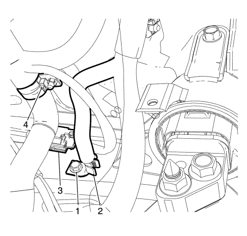
- Extraiga el perno (1) de masa y aparte el mazo de cables (2).
- Desenchufe el conector del sensor de velocidad de las ruedas (3).
- Desmonte y aparte el retenedor del mazo de cables (4) con la herramienta adecuada.

- Desconecte el tubo flexible de entrada (1) y de salida (2) del calefactor del conducto del calefactor.
Nota: Tapone o selle los tubos flexibles y las entradas al separar los componentes del sistema de refrigeración, esto previene la entrada de suciedad u otros contaminantes en el sistema de refrigeración.
- Tapone o selle los tubos flexibles y las entradas del sistema de refrigeración.

- Desconecte el terminal del cable de la palanca selectora del cambio del pasador de la palanca de la transmisión. Sobre el cambio manual, consulte Sustitución del cable de la palanca del cambio manual y de la palanca selectora .
- Presione las lengüetas de bloqueo hacia adentro para liberar el cable de la palanca selectora del cambio del soporte del cable.
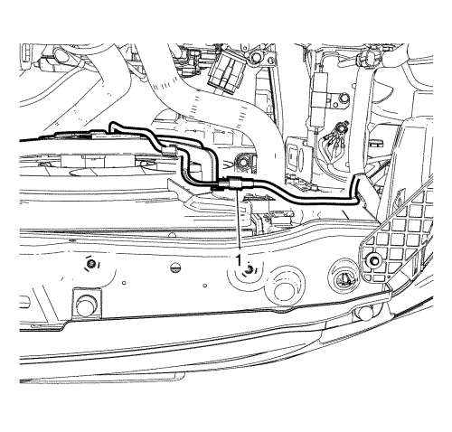
- Desconecte el conector (1) del módulo del cárter.
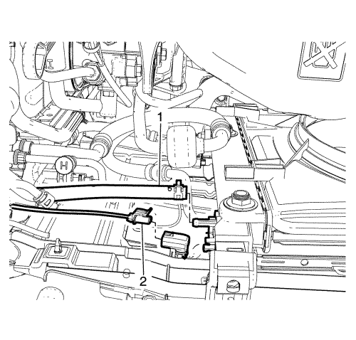
- Desenchufe el conector (2) del sensor de temperatura del aire ambiente si procede.
Nota: Tapone o selle los tubos flexibles y las entradas al separar los componentes del sistema de refrigeración, esto previene la entrada de suciedad u otros contaminantes en el sistema de refrigeración.
- Desconecte el tubo flexible de refrigerante (1) del CRFM.
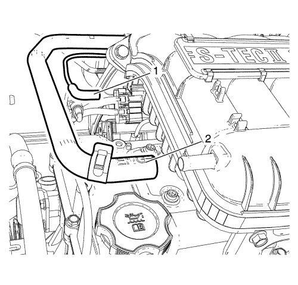
Nota: Con el encendido en OFF y los frenos fríos, presione los frenos 3-5 veces, o hasta que el pedal del freno esté firme, para reducir la reserva del servofreno de vacío.
- Reduzca la reserva del servofreno de vacío.
- Desconecte el tubo flexible de vacío (2) del colector de admisión superior.
- Reposicione y aparte el tubo flexible de vacío (2) del tren motor.
- Elevar el vehículo Consultar Elevación del vehículo con un gato .
- Desmonte las ruedas delanteras. Consultar Desmontaje y montaje de los neumáticos y las ruedas .
- Desmonte el panel del parachoques delantero. Consultar Sustitución del panel del parachoques delantero .
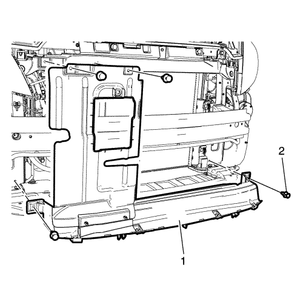
- Desmonte los clips (2).
- Extraiga la protección de aire delantera (1).
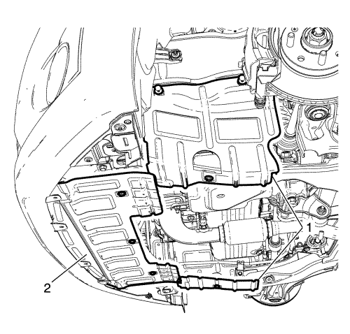
- Extraiga la cubierta (1, 2).
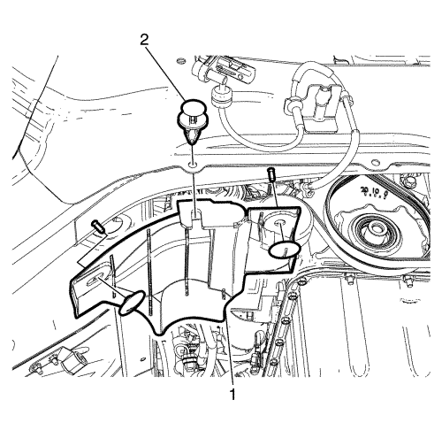
- Extraiga el clip (2) y el deflector de agua.
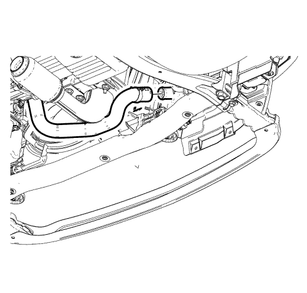
- Coloque un envase adecuado bajo el radiador y el motor.
Nota: Tapone o selle los tubos flexibles y las entradas al separar los componentes del sistema de refrigeración, esto previene la entrada de suciedad u otros contaminantes en el sistema de refrigeración.
- Drene el sistema de refrigerante desconectando el tubo flexible inferior como se indica.

Nota: no desmonte el tubo flexible de la dirección asistida del depósito de líquido de la servodirección.
- Extraiga los pernos (1) del depósito del líquido de la dirección asistida y desenganche el depósito y apóyelo sobre el motor.
- Desconecte los tubos flexibles de refrigerante (3, 4, 7) del depósito de compensación de refrigerante.
Nota: Tapone o selle los tubos flexibles y las entradas al separar los componentes del sistema de refrigeración, esto previene la entrada de suciedad u otros contaminantes en el sistema de refrigeración.
- Tapone o selle los tubos flexibles y las entradas del sistema de refrigeración.
- Extraiga los pernos de retención (2) del depósito de compensación de refrigerante a la carrocería.
- Desmonte el depósito de compensación de refrigerante.

- Desconecte el tubo flexible de alimentación de combustible (3) del conducto de alimentación de combustible (1).
Nota: Tapone o selle los extremos del conducto de alimentación de combustible (1) y del tubo flexible de alimentación de combustible (3) para prevenir fugas o contaminación de combustible.
- Tapone o selle los extremos del conducto de alimentación de combustible (1) y del tubo flexible de alimentación de combustible (3).
- Desconecte la toma de purga (4) de emisión de vapores (EVAP) del solenoide de purga.
Nota: Una vez completo el desmontaje, tapone las aperturas del tubo flexible con un paño limpio y sin pelusa para evitar la entrada de materiales extraños.
- Tapone o selle los extremos de la toma de purga (EVAP)(4) y del solenoide de purga.
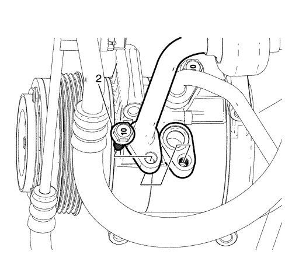
- Extraiga el perno de retención (2) que fija la almohadilla de la toma de succión/descarga al compresor de A/A.
- Desconecte la almohadilla de la toma de succión/descarga del A/A del compresor de A/A.
Nota: Tapone o selle inmediatamente los extremos del conducto de succión/descarga del A/A y los puertos del compresor para prevenir la contaminación y absorción de la humedad atmosférica.
- Tapone o selle los extremos de succión/descarga del A/A y los puertos del compresor.
Nota: Las juntas tóricas de sellado del A/A son de un sólo uso y no pueden volver a sellarse. Monte las juntas tóricas de sellado NUEVAS cada vez que se desmonte la toma de succión/descarga del A/A del compresor del A/A.
- Desmonte y elimine las juntas tóricas de sellado del conducto de succión/descarga del A/A.

Nota: Tapone o selle inmediatamente los extremos del conducto de succión/descarga del A/A y los puertos del compresor para prevenir la contaminación y absorción de la humedad atmosférica.
- Desmonte la tuerca del tubo flexible del compresor y el condensador del A/C (1) del condensador del A/C.
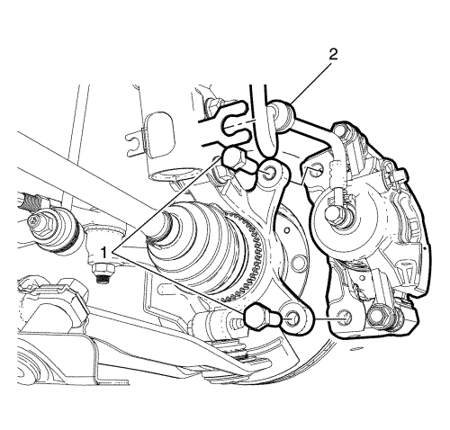
Nota: NO desconecte el tubo flexible de los frenos hidráulicos del calibrador de frenos, de lo contrario será necesario sangrar por completo el sistema de frenos.
- Separe el tubo flexible (2) del freno delantero del soporte de retención del tubo flexible del freno del montante y extraiga los pernos de retención (1) que fijan la placa de anclaje del calibrador del freno delantero a la rótula. Repita la acción en el lado opuesto.
- Desmonte el calibrador de los frenos delanteros de la rótula de dirección delantera. Repita la acción en el lado opuesto.

- Apoye el calibrador del freno delantero (1), con cable pesado de mecánica, o equivalente (2). Repita la acción en el lado opuesto.
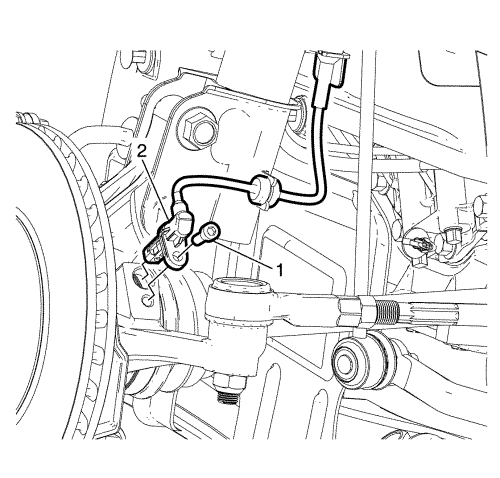
- Extraiga el perno de retención del sensor de velocidad de rueda (1) y separe el mazo de cables del sensor de velocidad de rueda (2) del soporte de retención del montante.
- Asegúrelos lejos de los componentes del soporte y la suspensión. Repita la acción en el lado opuesto.
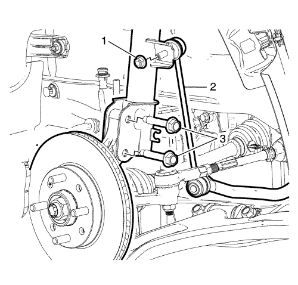
- Retire los pernos (3), las tuercas opuestas y la tuerca (1).
- Desmonte el conector del eje del estabilizador (2) del soporte de retención del montante. Repita la acción en el lado opuesto.
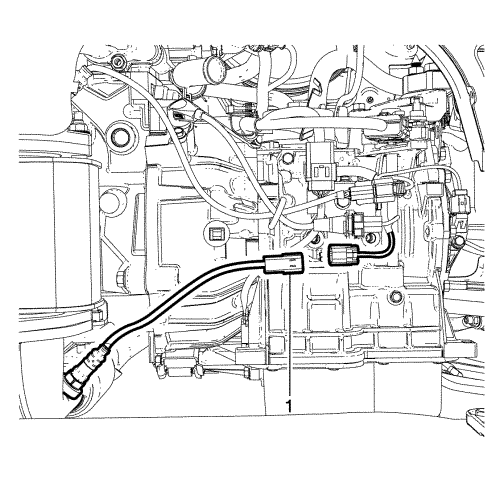
- Desenchufe el conector del sensor de oxígeno (1).
- Desmonte el tubo flexible de escape. Consultar Sustitución del tubo de escape .

Nota: El manual de montaje de SPX se suministra con la herramienta especial y también está disponible en línea directamente en SPX. Vaya a www.spxtools-shop.com.
- Coloque la herramienta de soporte del motor CH-49290 (1) siguiendo las instrucciones del manual de instalación SPX.
- Monte el soporte del par (2) en el motor.
- Apoye el bastidor base CH-904 en un gato.
- Apoye la herramienta de soporte del motor CH-49290 sobre el bastidor base CH-904.

Nota: El manual de montaje de SPX se suministra con la herramienta especial y también está disponible en línea directamente en SPX.
- Instale la herramienta de soporte del motor CH-49290 (1) siguiendo las instrucciones del manual de instalación SPX.
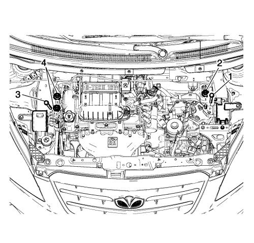
- Extraiga el perno (3) y las tuercas (4) de retención del montaje del motor.
- Extraiga el perno (1) y la tuerca (2) de retención de la transmisión.

Nota: El manual de montaje de SPX se suministra con la herramienta especial y también está disponible en línea directamente en SPX. Vaya a www.spxtools-shop.com.
- Coloque el bastidor de centrado CH-49289 (1) siguiendo las instrucciones del manual de instalación SPX.
- Apoye el bastidor base CH-904 en un gato.
- Apoye el bastidor de centrado CH-49289 sobre el bastidor base CH-904.

Nota: El manual de montaje de SPX se suministra con la herramienta especial y también está disponible en línea directamente en SPX.
- Instale el bastidor de centrado CH-49289 (1) siguiendo las instrucciones del manual de instalación SPX.

- Extraiga los pernos del bastidor a la carrocería (1).
- Baje lentamente la plataforma del gato y desmonte el bastidor con el motor del vehículo.
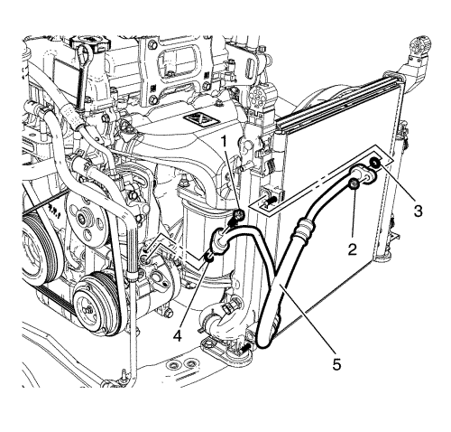
- Extraiga el perno de retención (1) que fija la almohadilla de la toma de succión/carga al compresor de A/A y la tuerca de retención (2) de la almohadilla de la toma de succión/carga al condensador.
- Desconecte la almohadilla de la toma (5) de succión/carga del A/A del compresor de A/A.
Nota: Tapone o selle inmediatamente los extremos del conducto de succión/descarga del A/A y los puertos del compresor para prevenir la contaminación y absorción de la humedad atmosférica.
- Tapone o selle los extremos del conducto de succión/carga del A/A, los puertos del condensador y los puertos del compresor.
Nota: Las juntas tóricas de sellado del A/A son de un sólo uso y no pueden volver a sellarse. Monte las juntas tóricas de sellado NUEVAS cada vez que se desmonte la toma de succión/descarga del A/A del compresor del A/A.
- Desmonte y elimine las juntas tóricas de sellado del conducto de succión/carga del A/A (3, 4).
- Elimine las juntas tóricas.
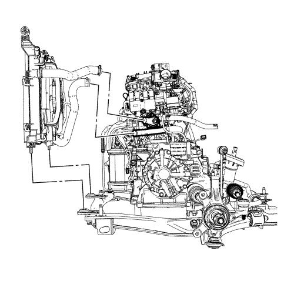
- Desmonte el módulo del ventilador del radiador del condensador (CRFM).

- Desenchufe el conector (1) de la válvula de control de aire en ralentí (IACV), el conector (2) del sensor de posición del acelerador (TPS) y el conector (3) del sensor de presión absoluta del colector (MAP).

- Desenchufe el conector (1) EGR, el conector (2) del sensor de posición del árbol de levas, el conector (3) del termostato del calefactor, el conector (4) del sensor de temperatura del refrigerante del motor y el conector (5) DIS.
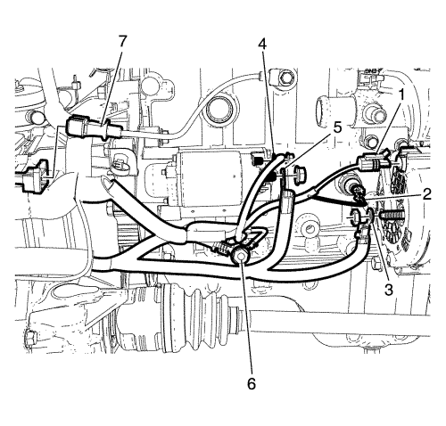
- Desenchufe el conector (1) del mazo de cables del alternador, el conector (2) del interruptor de presión de aceite y el conector (7) del sensor de picado.
- Extraiga la tuerca de retención del cable positivo de la batería al alternador.
- Desconecte el cable positivo de la batería (3) del alternador.
- Extraiga la tuerca de retención del mazo de cables del cable de la batería al motor del motor de arranque.
- Desconecte el mazo de cables del cable de la batería (4, 5) del motor del motor de arranque.
- Extraiga el perno de retención (6) de masa del mazo de cables del motor al bloque motor.

- Desenchufe el conector (1) de la válvula de control de la guía de deslizamiento del colector de admisión y separe el mazo de cables (5) del colector de admisión.
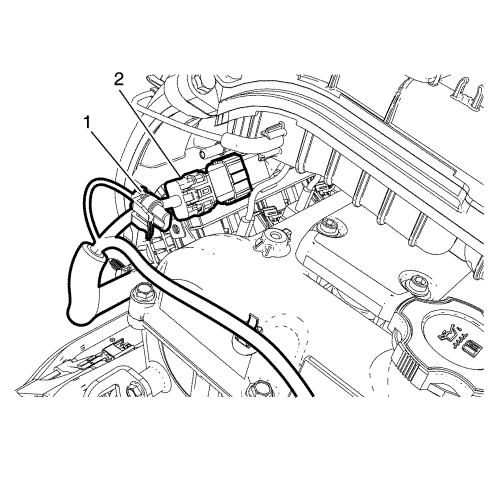
- Desenchufe el conector del solenoide de purga del cartucho (1) y el conector eléctrico del mazo de cables del inyector (2).

- Desenchufe el conector (1) de la dirección asistida y el conector eléctrico (2) del compresor de A/A.
- Desacople el clip (3) del mazo de cables del motor del soporte.
- Desmonte el mazo de cables del motor del tren motor.
- Desmonte la correa de la dirección asistida. Consultar Desmontaje de la correa de la bomba de la servodirección .
- Desmontar la correa de accionamiento. Consultar Desmontaje de la correa de accionamiento .
- Desmonte la bomba de la dirección asistida. Consultar Sustitución de la bomba de la dirección asistida .
- Desmonte el compresor de A/C. Consultar Sustitución de compresor de aire acondicionado .
- Extraiga el alternador. Consultar Sustitución del generador .
- Afloje y desmonte los pernos de la transmisión. Consultar Sustitución de la caja de cambios y Sustitución de la caja de cambios .
- Acople una cadena y ganchos de elevación adecuados al soporte de elevación.
- Utilizando una grúa de elevación adecuada, levante el motor.
- Monte el motor en un soporte de motor adecuado.
- Transfiera las piezas según sea necesario.